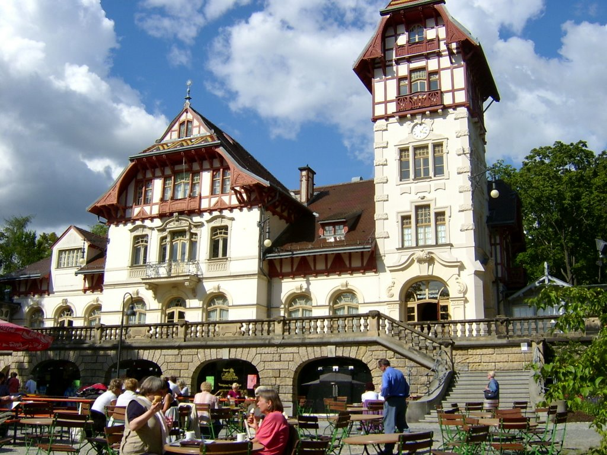

I'm from a small village outside of Hof, Germany. It's northeast of Nuremberg and the border of Poland is just east of us. The countryside is beautiful, so I fit in perfectly. However, I am generous, and my beauty must be shared with the rest of the world, so I travel abroad to allow others to bask in it.